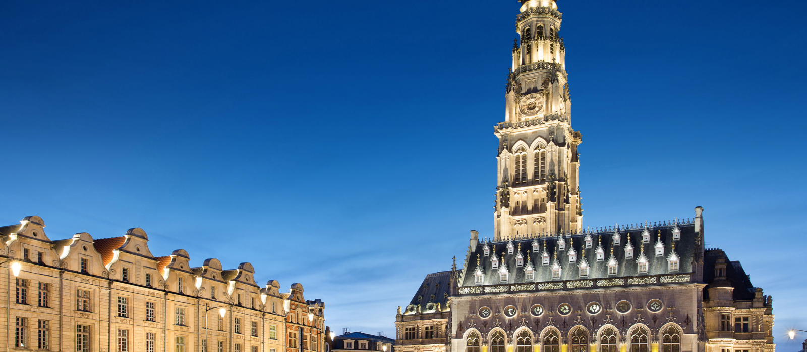
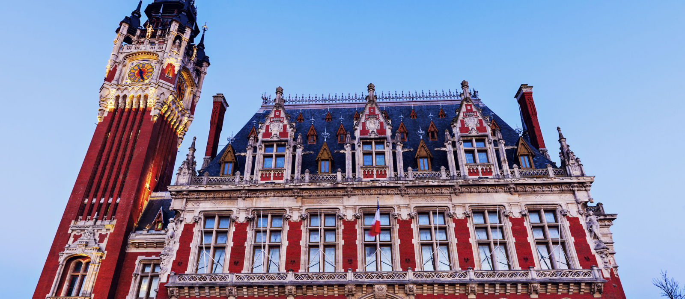
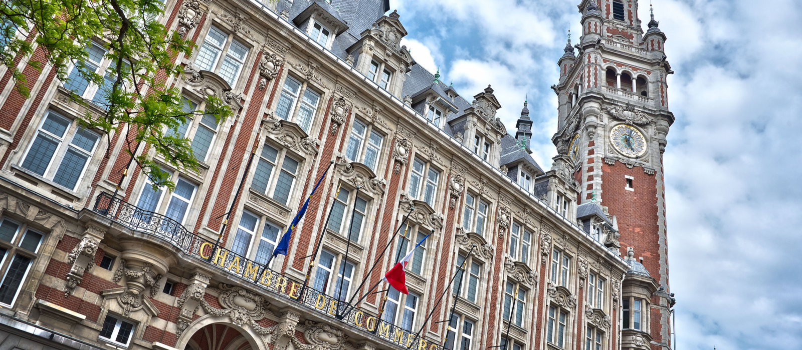

Les Beffrois
Les beffrois font inexorablement partis du patrimoine du Nord-Pas de Calais, et symbolisent le passé historique de la région. Ces édifices qui servaient autrefois de tours de guet pour prévenir de l’arrivée des pillards, sont maintenant inscrits au patrimoine mondial de l’UNESCO !
Le beffroi d' Arras
Cet imposant beffroi à l’architecture gothique flamboyante fut détruit lors de la Première Guerre Mondiale et entièrement reconstruit à l’identique. La tour est coiffée de la couronne impériale de Charles Quint, rappelant ainsi le passé historique de la ville. Du haut de ses 75 mètres, vous profiterez d’un magnifique panorama sur la ville d’Arras et sa campagne environnante
Le beffroi de Calais
Le beffroi de Calais se distingue par son style mélangeant architecture flamande et style Renaissance. Tout en briques rouges, accolé à l’hôtel de ville, l’édifice ne passe pas inaperçu ! Au sommet, un carillon électrique joue une ritournelle tous les quarts d’heure, comme le veut la tradition.
Le beffroi de Lille
Du haut de ses 104 mètres de hauteur, le beffroi de Lille est le plus haut de toute l’Europe du Nord ! Construit sur 14 étages, son architecture marie le style traditionnel de la Renaissance flamande, et des matériaux plus modernes du XXème siècle. Tout en haut, évidemment une vue imprenable, et un phare dont le faisceau est visible à 30 km à la ronde !